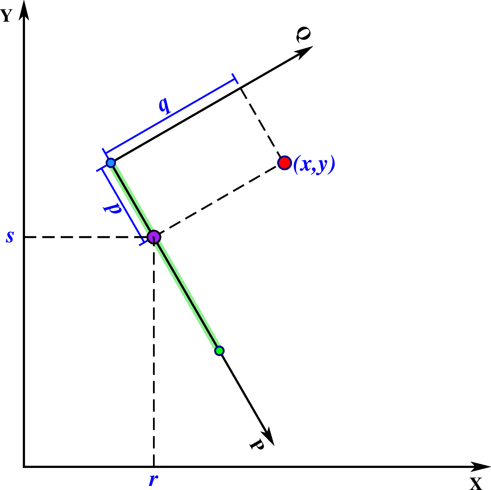
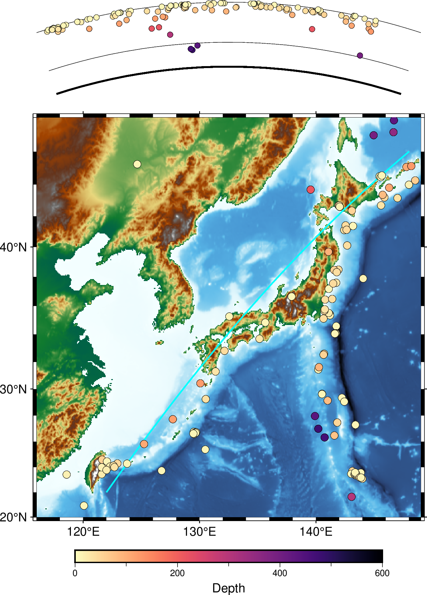

project
- 官方文档:
- 简介:
生成测线、将数据点投影到测线上
该模块具有三个主要功能：
生成测线
指定测线和数据点，得到该点在测线坐标系下的坐标，即下文中提及的
p和q指定测线和数据点，得到该点在测线上的投影点的坐标，即下文中提及的
r和s
以上三个功能均要求用户首先定义测线，测线可以用如下三种方式中的任意一种来定义：
在指定测线后，如果要生成测线，输出测线上的点的坐标，可以使用 |-G| 选项。 在指定测线后，用户再给出一个点(x,y) ，可以得到该点在测线的投影点以及该点在测线坐标系下的坐标:
x y z p q r s
其中：
x和y是数据在原坐标系下的坐标z是输入数据中的其余所有列p和q是数据点 (x,y) 在测线坐标系下的坐标r和s是数据点 (x,y) 在测线上的投影点在原坐标系下的坐标
可以使用 |-F| 选项设置要输出哪些变量。
下面详细解释一下这些变量的物理意义。
{kind=link}

project 示意图
图中的红点就是给出的点(x,y)。绿色粗线为测线。 测线上有 3 个点，蓝色和绿色两个点为测线的起点和终点。 以测线起点为原点，以测线为P轴，在测线起点按右手螺旋法则做垂直于P轴的Q轴，构成测线坐标系。 点(x,y)在测线坐标系的坐标即为(p,q)。 紫色点为点(x,y)在测线上的投影点，坐标为(r,s)。
必选选项
- -Ccx/cy
对于定义1和2而言，该选项指定测线的起点坐标；对于定义3而言，该选项指定了 旋转坐标下零经线所穿过的点
可选选项
- table
由一系列的数据列构成的ASCII文本格式的表格数据文件，每行的格式为
x y z（意义同上）。
- -Aazimuth
定义1中用于指定测线的方位角。参数 azimuth 定义为正北开始的顺时针旋转角。
- -Ebx/by
定义2中用于指定测线的终点
- -Gdist[unit][/colat][+n]
生成测线模式。
该选项用于生成测线，此时不需要输入文件 table 。 输出数据有三列：经度、纬度以及当前点离测线起点的距离，即 (r, s, p) ，测点的距离间隔为 dist 。
不使用 |-Q| 选项时， unit 的设置无效。 p 和 dist 的单位强制为弧度。
而使用 |-Q| 选项时， p 和 dist 的单位默认为km。可以设置 unit 为其他长度单位，例如 e 表示为m。
默认情况下会按照大圆路径生成测线。当使用定义2指定测线的两个端点时，可以通过指定 colat 来生成小圆。
使用 +n 则 dist 不再表示为距离间隔，而是测点的总数。此时 unit 设置无效。
- -L[w|lmin/lmax]
仅坐标 p 在 lmin 和 lmax 之间的数据会被投影到测线上。 lmin 和 lmax 的单位规定见 |-Q| 选项。 如果是负数则表示反方向的数据范围。 若使用了 |-E| 选项，则可以简单使用 -Lw 表示只选取 p 在测线起点和终点之间的数据。
- -N
指定展平地球，在平面内使用笛卡尔坐标变换。默认使用球面三角。
- -Q
设定原坐标系下 x、y、r、s 的单位是弧度， 测线坐标系下 p、 q、 dist、 lmin、 lmax、 wmin、 wmax 的单位是km。 若不使用该选项，则原坐标系和测线坐标系下的所有量都设定为相同的单位（球面三角中默认全部为弧度）。
- -S
将输出按照 p 增序排列。在原数据坐标随机分布时较为有用。
- -Tpx/py
定义3中用于指定rotation pole的位置
- -Wwmin/wmax
仅坐标 q 在 wmin 和 wmax 范围内的数据才会被投影到测线上。单位规定见 |-Q| 选项。
示例
把数据文件ship_03.txt（格式为lon,lat,depth）投影到由两点（330,-18）、（53,21）定义的大圆路径上，并进行排序，只输出距离 p 和深度。 p 的单位是千米:
gmt project ship_03.txt -C330/-18 -T53/21 -S -Fpz -Q > ship_proj.txt
指定测线的起点和终点，在测线上每隔10千米生成一个点。距离测线起点的距离单位为千米:
gmt project -C-50/10 -E-10/30 -G10 -Q > great_circle_points.xyp
指定测线的起点和终点，沿着colatitude=60的小圆上，每隔10千米生成一个点:
gmt project -C-50/10 -E-10/30 -G10/60 -Q > small_circle_points.xyp
利用 |-F| 选项指定输出坐标 r, s 来得到某点在某测线上的投影点:
echo 102 30 | gmt project -C103/31 -A225 -L0/500 -Frs -Q
已知某点，根据方位角和大圆距离计算另一点。已知一点(120, 25)，根据方位角 45 度，大圆距离 123 千米的点位置
gmt project -C120/25 -A45 -L0/123 -G123 -Q | tail -1
根据地震目录数据，将地震事件投影到深度剖面并绘制：
#!/usr/bin/env bash
gmt begin ex
a=122/22
ap=148/46
# 从GMT远程服务器下载示例地震目录文件
gmt which -Gl @quakes_2018.txt
gmt basemap -JM10c -R116/149/20/48 -Baf
gmt grdimage @earth_relief_04m_p -Cgeo
# 绘制 a-ap 测线。生成测线时以0.1度为间隔输出坐标点。
gmt project -C${a} -E${ap} -G0.1 | gmt plot -W1p,cyan
# 示例文件前三列分别为经度、纬度、深度
# 根据深度绘制不同颜色的圆点
gmt makecpt -Cmagma -T0/600/1 -I
gmt colorbar -Bxaf+lDepth -C
gmt plot quakes_2018.txt -Sc0.2c -C -W0.1
# 绘制地表
gmt basemap -JP10c+a+t18 -R0/36/5711/6371 -Byg6371 -BS -Y11c
# 绘制 410 界面
gmt basemap -Byg6371+5961 -BS
# 绘制 660 界面
gmt basemap -Byg6371+5711 -BS
# 把数据投影到 a-ap 剖面，限制为剖面两侧30度范围的数据
gmt project quakes_2018.txt -C${a} -E${ap} -Fpz -Lw -W-30/30 | gawk '{print $1,6371-$2,$2}' | gmt plot -Sc0.15c -C -W0.1p -N
gmt end show
{kind=link}
